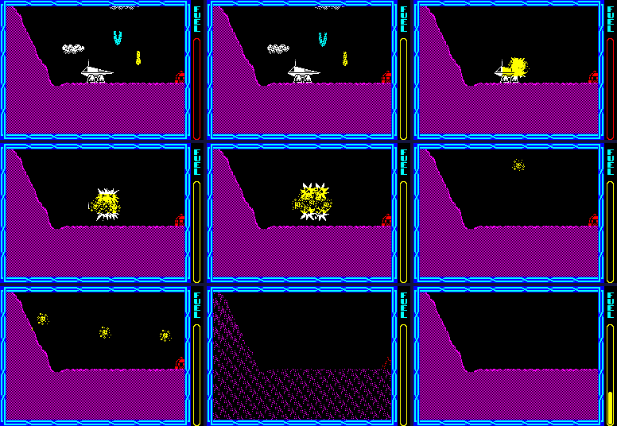

| Damage, fuel and lives |
Two things kill the ship: a third hit, and an empty tank. Either sets the death byte, death_count, which then counts up a pass at a time through the wreck, the death sequence and the wipe of the screen, and a life is taken.
A touch with contact bit 6 -- every attacker, the rocks, bullets, pellets -- goes to contact_damage, at most once every 16 passes per object; the flickering beams go through beam_hits_ship. Both reach damage_ship, which does nothing while the shield runs (shield_timer) or the ship is already dying; otherwise a zap, hit_count up by one, and the panel's ship icon recoloured by the new count, the third hit setting the death byte to 1. Ground objects never damage the ship: they are solid, and it bounces off them.
Repair. A refuel pad (ship_hits_ground_objects) sets hit_count to $FF and calls the same routine, which wraps the count to 0 and colours the icon white: one routine both damages and repairs.
Worked example: damage_ship called three times in the simulator at the start of a game, then, on a fresh copy, once more and again with the count written as $FF, as the pad does; the icon read from the screen each time:
| Hits | Called | Hit count | Death byte | Icon's colour |
|---|---|---|---|---|
| 0 | 0 | 0 | bright white | |
| 1 | damage_ship | 1 | 0 | bright yellow |
| 2 | damage_ship | 2 | 0 | bright magenta |
| 3 | damage_ship | 3 | 1 | black |
| a hit, then the pad's $FF | damage_ship | 0 | 0 | bright white |
Player 1's ship icon: before, after each hit, and after the repair.
The shield ring, thrown up one throw in eight by the mounds that throw bullets, sets shield_timer to $FF when touched; ship_pass counts it down on odd passes, so it lasts 510 passes. While it runs no damage is taken, an attacker that touches the ship dies instead, and colour_ship paints the ship cyan, flashing in its last 32 counts.
fuel is a word whose high byte is the gauge's level as a screen line: $42 full, $BE empty, 124 steps. Only add_fuel changes it. read_controls burns it while steering or thrusting -- coasting and falling are free -- halved with add-on 6 and halved again while fuel_saver is set. The refuel pick-up gives 28 steps back (contact_refuel), the fuel thief takes 16 (contact_drain_fuel), a refuel pad fills the tank, and a new life starts full.
Worked example: from the start of a game, 32 passes with each of these held, the fuel word read before and after (the gauge has 31,744 256ths of a step to burn):
| Held | Fuel word a pass | Passes from full to empty |
|---|---|---|
| nothing | 0 | never |
| thrust (A) | 8 | 3,968 |
| steering (Z) | 8 | 3,968 |
| both | 16 | 1,984 |
| both, with add-on 6 | 8 | 3,968 |
The gauge (update_fuel_gauge) moves fuel_shown one row a pass towards the level, and flash_fuel_gauge turns it red on two passes in four once it is low. Running out (check_fuel_empty): once the gauge shows empty, the death byte is set the next time the low seven bits of pass_counter are 0 -- up to 128 passes of grace. With the tank emptied in the terrace scene, the gauge took 123 passes to run down to empty and the ship died 74 passes after that.
| Death byte | What happens |
|---|---|
| 1-3 | every object starts exploding |
| not 0 | nothing touches the ship, nothing new spawns, no damage, no fuel death |
| 10 | wreck_ship: the ship breaks into four pieces of debris and five falling pieces |
| 10-$2C | sound_death each pass |
| $0B on | ship_pass no longer moves the ship |
| 12 | the play loop goes to the death sequence ($F48B) |
| $50 | the sequence ends |
The death sequence stops the landscape, sets the fuel empty, and loops on ship_pass, the pause test, the gauge, update_objects and carried_part until the byte reaches $50. Then death_tune, the play area dissolved (dissolve_play_area: every byte ANDed sixteen times with masks that each clear one bit, running on from byte to byte so the picture crumbles) and cleared, lose_life takes a life, and play starts the next at the restart point.
Worked example, the same death. The empty gauge set the death byte to 1 in update_fuel_gauge and update_objects counted it to 2 later in the same pass; 10 more passes took it to 12, then 68 passes of the death sequence to $50. The play area at death byte $02, $03, $0A, $0B, $0C, $20, $40, then part way through the dissolve, then the first pass of the next life:

A death from an empty tank, stage by stage.
lives: 5 at a new game (read from the game), one taken by lose_life after each death, at most 9. The panel shows lives less one: the ship in play is not counted. At none, game_over. Extra lives (contact_extra_life) come from the ship-icon pick-up, thrown by the same mounds every (lives x 4)th throw (extra_life_countdown): one throw in twenty with five lives, one in four with one -- the game helps a player who is losing. The ore aboard survives a death (ore_kept).